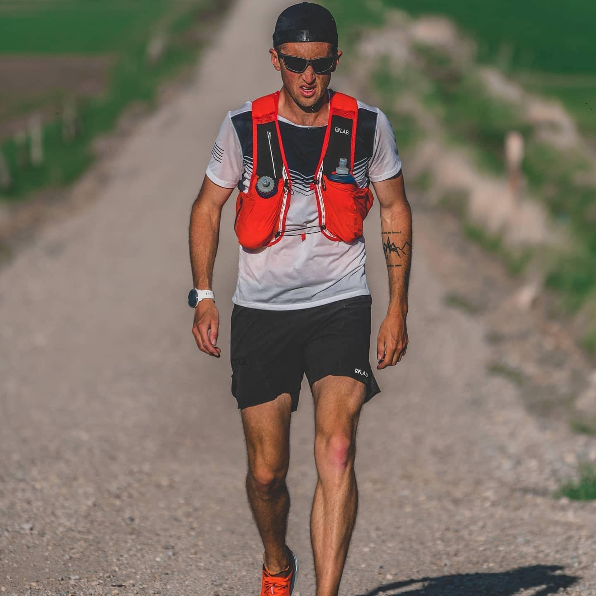

Hi everyone, I’m Michael McKnight and this is an #Athletetakeover of @foodbuddy account! You may know me from @foodbuddy IG live, in which we spoke about my recent ultra run (100 mi in 18h 40min) on 0 calories. Today I’ll share more about my nutrition. Over the past 3 years I’ve done Keto/Optimized Fat Metabolism. During this journey I’ve learnt what my body likes and can’t tolerate, I’ve learned that my body reacts best to certain foods in the low carb realm. Eventually, I’ve identified foods that I truly love and my body has no issues with and I stick to them. Here’s my daily nutrition: Every day I either fast for breakfast or have 5-6 eggs. For lunch I either have 80/20 ground beef in egg or my Gnarly Grass-fed Whey Protein Shake. For dinner it’s always a type of steak (TriTip, Beef Cap, Sirloin, T-bone) or a roast, with some veggies. I don’t get bored with my food choices. I view food as fuel over something that is meant to comfort me. Once I finally realized that concept, I was able to narrow down my food choices. At the beginning of my journey I cheated a lot. I’d eat fried, junk food after big races. 2019 was the year I truly dialed in the diet and became very strict. It has now become more than a diet for me. It’s a way of life. I love meat and fat. I actually have never tested my ketones, I chose to not look into that ever because checking ketones could become addictive and sidetrack me. Also, there are so many variables that go into the readings and you could technically read as not in ketosis. I add more carbs before and after race to replenish my glycogen storages. Fruits & berries, sweet potato, red potato, dark chocolate, and whiterice. My food choices are definitely not for everyone. I’m happy to have supportive friends and family. Typically, if we go out to eat, we go to a place that accommodates my style of eating. It’s actually not that hard to find Keto food. My lifestyle generally doesn’t affect my family either as my wife and I have always cooked separately for breakfast and lunch. For dinner, we usually eat the meat I’m cooking but we are doing our own sides. She’ll do rice or potatoes, and I’ll do veggies. 📸 by @matthewwvanhorn
2020-06-07 07:39:23
Back to main page